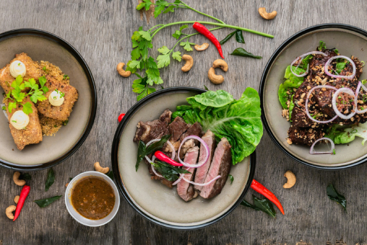

Welcome to Good Recipes - Your Culinary Adventure Begins Here!

Explore, Create, Savor: Unleash Your Inner Chef!
At Good Recipes, we believe that the heart of every home is its kitchen. Whether you're a seasoned chef or a kitchen novice, our mission is to inspire your culinary journey with mouthwatering recipes, expert tips, and a dash of creativity. Get ready to embark on a flavorful adventure that will tantalize your taste buds and elevate your cooking skills.
Discover a World of Delectable Recipes
From classic comfort foods to exotic international cuisines, our extensive collection of recipes caters to all tastes and skill levels. Explore step-by-step instructions, ingredient lists, and helpful tips that guarantee successs in your kitchen endeavors. Whether you're craving a cozy soup, a show-stopping dessert, or a quick weeknight dinner, Good Recipes has you covered.

Join Our Community: Share, Learn, Connect
Become a part of our vibrant community of food enthusiasts. Share your own culinary creations, ask for advice, and connect with like-minded individuals who share your passion for all things food. Whether you're a seasoned pro or just starting your culinary journey, our community is a welcoming space to exchange ideas, tips, and recipes.